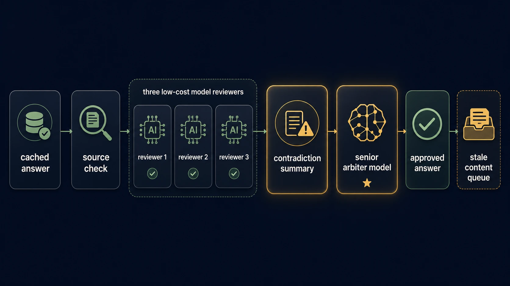
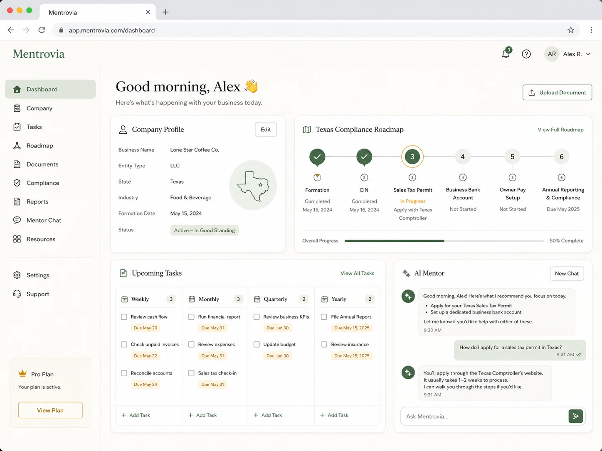

01
Formation guidance
Guide users through solo, DBA, LLC, corporation, and employee-stage considerations with Texas-first assumptions.
Mentrovia helps small business owners understand formation, taxes, compliance, banking, owner pay, branding, and recurring operating tasks — starting with Texas and built to expand state by state.
Mentrovia is an educational and workflow-assistance project, not legal, tax, accounting, or financial advice.
What it helps with
Mentrovia combines structured business checklists with AI-assisted explanations and validation workflows so users can understand what to do next.
Guide users through solo, DBA, LLC, corporation, and employee-stage considerations with Texas-first assumptions.
Organize sales tax, franchise tax, employer registration, city/county considerations, and annual obligations.
Weekly, monthly, quarterly, and yearly task plans keep owners oriented after setup is complete.
Encourage dedicated business banking, clean recordkeeping, merchant services, and practical setup readiness.
Compare draws, salary, guaranteed payments, dividends, and retained earnings by entity type and use case.
Generate name ideas, logo prompts, ad concepts, social copy, and basic brand positioning for new businesses.
V1 beta scope
The first beta should focus on Texas, company intake, guided roadmaps, reusable advisory content, source-backed task lists, and a conservative AI validation pipeline.
Solo operator, no entity, no employees, needs business basics.
Already operating, may need entity, accounting, and tax cleanup.
Payroll, registrations, policies, recurring HR obligations.
Weekly/monthly/quarterly/yearly task plans and reminders.
AI validation
Mentrovia should not rely on a single model for compliance-sensitive guidance. The roadmap uses cached advisory content, low-cost freshness checks, contradiction detection, and a stronger final arbiter model.

Laravel-first stack
The planned stack is Laravel, MySQL, Livewire, Tailwind, and Alpine, with OpenRouter-backed model routing for advisory generation and validation.

Open source
Mentrovia is intended to be transparent, auditable, and contributor-friendly. Advisory content should be source-backed, versioned, and validated before users depend on it.